A vague idea that we wanted to do something for soils at scale —
no real clue what.
EIGHT MONTHS OF WANDERING
Lots of ideas. Nothing that quite stuck.
We spent roughly 8 months trying to figure out
what to actually build.
Then a new piece of UK government policy landed
— and suddenly there was an ideal soil-related problem for us to solve.
ENTER SAM1
The Sustainable Farming Incentive action that kicked things off
💷
£6 / hectare
Paid to farms with an up-to-date soil management plan and soil organic matter results.
📋
+ £95 / year
Flat annual payment, on top.
Suddenly there was a national-scale incentive to produce soil management
plans — and the price-per-hectare was tight enough that it had to be
fast to be worth doing.
Edge cases: NVZ boundaries that nip a tiny corner of a field
aren't really “in” the sensitive area
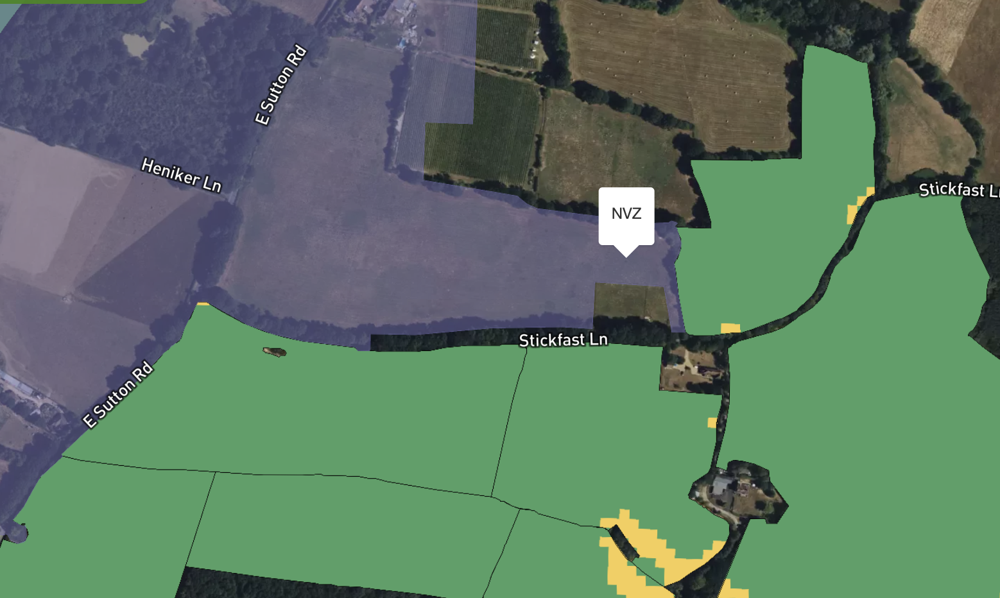
SLOPE DIRECTION ARROWS
The unsung hero of map interpretation
↘️
Tiny arrows showing which way water actually flows
👀
Reading a slope map without them is way harder than it sounds
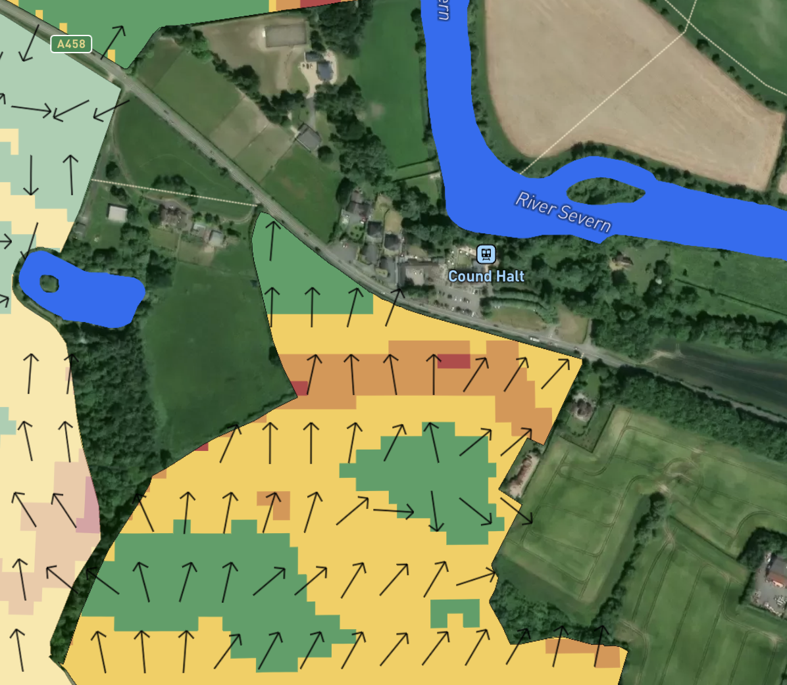
Part 3
KEY RISK LAYERS
The four risk layers a soil management plan needs
RUN-OFF RISK
Computed from slope
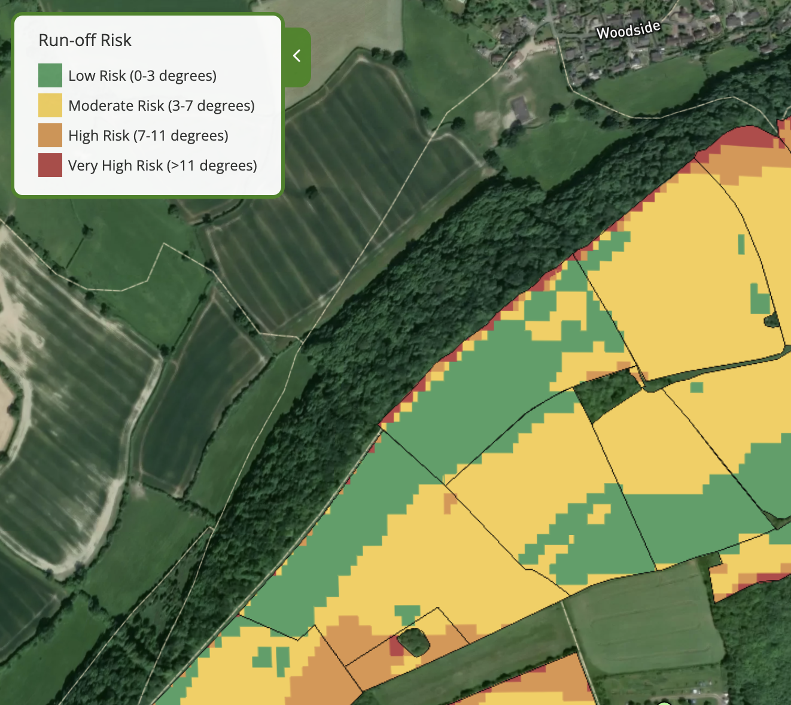
Slope range
Legend label
0–3°
Low Risk (0–3 degrees)
3–7°
Moderate Risk (3–7 degrees)
7–11°
High Risk (7–11 degrees)
> 11°
Very High Risk (>11 degrees)
WATER EROSION RISK
Computed from slope and soil texture
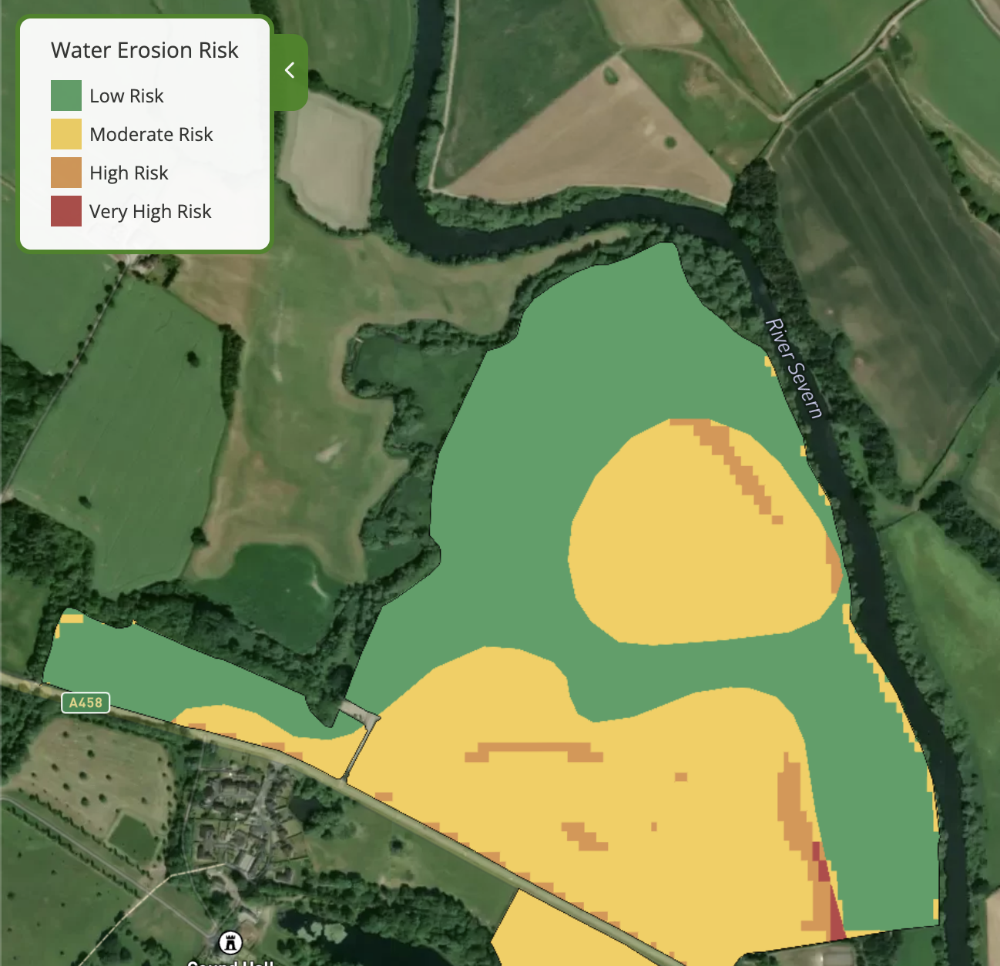
CLASSIFYING WATER EROSION RISK
flowchart TD
H{Texture category}
H -->|"SAND, SANDY LOAM,<br/>SILT TO SAND, PEATY SILT,<br/>SAND TO LOAM, etc."| T1[Sandy/light]
H -->|"LOAM, SILTY LOAM,<br/>CLAYEY LOAM etc."| T2[Medium]
H -->|"CHALKY SILTY LOAM,<br/>CHALKY SANDY LOAM,<br/>CHALKY CLAY variants,<br/>LOCALLY CHALKY"| T3[Calcareous]
H -->|"CLAY variants,<br/>PEATY CLAY,<br/>CLAY TO LOAM/SILT"| T4[Heavy]
T1 --> K{Slope}
T2 --> K
T3 --> K
T4 --> K
K --> M{"Lookup erosion_risk by<br/>texture × slope"}
M -->|"Sandy/light + flat ≤0°"| R1[Low Risk]
M -->|"Sandy/light + 0-3°"| R2[Moderate Risk]
M -->|"Sandy/light + 3-7°"| R3[High Risk]
M -->|"Sandy/light + 7-11° or >11°"| R4[Very High Risk]
M -->|"Medium + flat ≤0° or 0-3°"| R1
M -->|"Medium + 3-7°"| R2
M -->|"Medium + 7-11° or >11°"| R3
M -->|"Calcareous + flat ≤0° or 0-3°"| R1
M -->|"Calcareous + 3-7°"| R2
M -->|"Calcareous + 7-11° or >11°"| R3
M -->|"Heavy + flat ≤0°, 0-3° or 3-7°"| R1
M -->|"Heavy + 7-11° or >11°"| R2
WIND EROSION RISK
Where soil is most likely to blow away
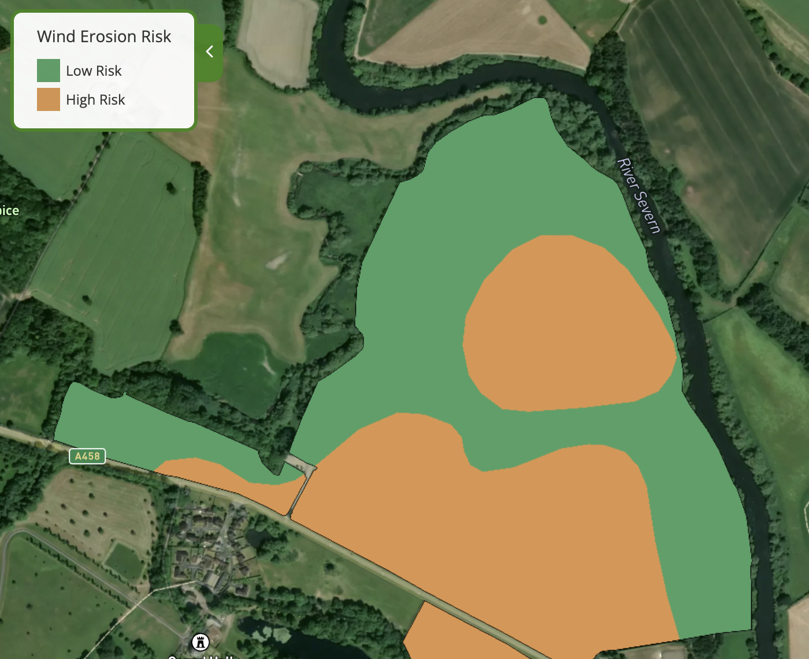
Risk level
Low Risk
cohesive, clay/loam-dominant or settled silt-clay mixes
Moderate Risk
chalky variants
High Risk
sand-, silt- and peat-dominated textures)
NITRATE LEACHING RISK
Where nitrogen is most likely to move down through the profile
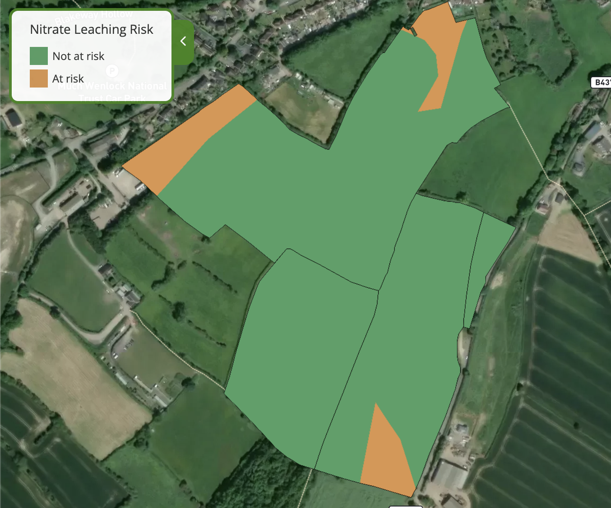
Shallow
Not shallow
Light sandy soils
At risk
At risk
All other soils
At risk
Not at risk
OTHER GEOSPATIAL COMPUTATIONS
Proximity-based flags applied to every field
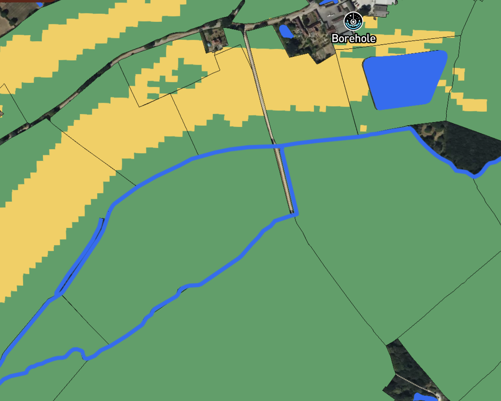
For each field we also compute…
💧
Within 20 m of a watercourse
🕳️
Within 50 m of a borehole
🛡️
In a sensitive area (NVZ, SSSI, SAC, …)
📐
Slope length
SPREADING MAPS
Where it's safe to apply slurry, manure or fertiliser — and where it isn't
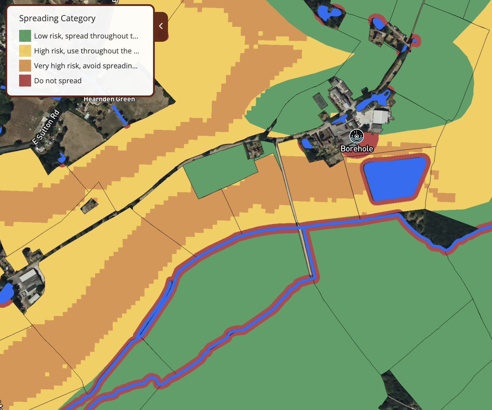
Built from four input layers…
📐
Topography
🪨
Soil
🕳️
Boreholes
💧
Water
Output: a four-class map —
green,
yellow,
orange,
red.
Spreading Map Rules
The red, orange and yellow rules per field
flowchart TD
R1["10m buffer around<br/>water features/links/points"]
R2["50m buffer around<br/>Springs"]
R3["50m buffer around<br/>boreholes"]
R4["Ramsar designation"]
R1 --> RED["RED — Do not spread"]
R2 --> RED
R3 --> RED
R4 --> RED
O1["Very steep slope<br/>>11°"]
O2["Steep slope 7-11°<br/>AND field adjacent to water"]
O3["Moderate slope 3-7°<br/>AND Heavy soil<br/>AND field adjacent to water"]
O4["SSSI designation"]
O1 --> ORANGE["ORANGE — Avoid spreading in winter / wet"]
O2 --> ORANGE
O3 --> ORANGE
O4 --> ORANGE
Y1["Slight slope 0-3°<br/>AND Heavy soil<br/>AND field adjacent to water"]
Y2["Moderate slope 3-7°<br/>AND Sandy/light soil<br/>AND field adjacent to water"]
Y3["Shallow soil depth"]
Y4["Field has drains"]
Y1 --> YELLOW["YELLOW — Restrict in winter"]
Y2 --> YELLOW
Y3 --> YELLOW
Y4 --> YELLOW
%% Invisible rank links to stack the three groups vertically
RED ~~~ O1
ORANGE ~~~ Y1
BEYOND THE MAP LAYERS
PROPOSALS
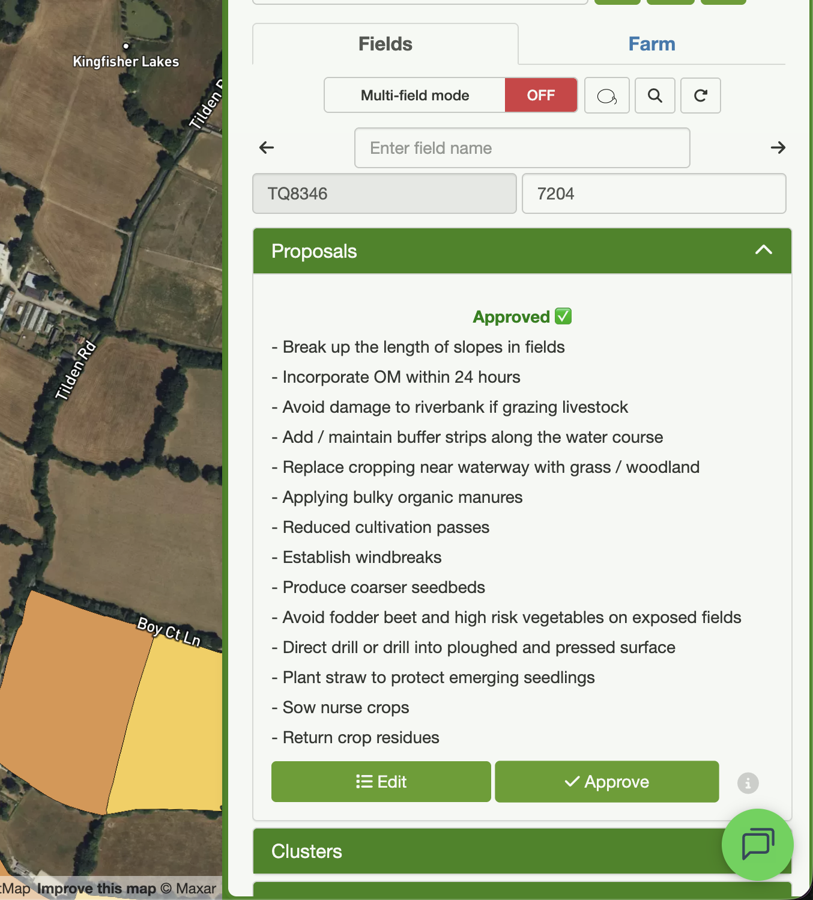
REPORTS
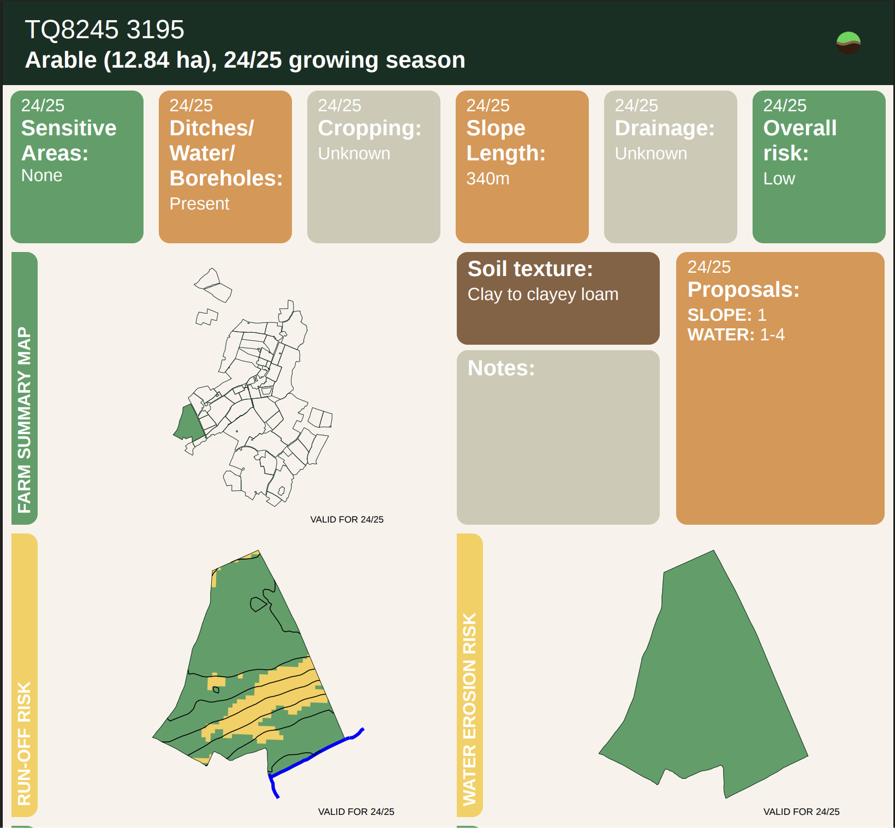
SOIL ANALYSIS UPLOAD
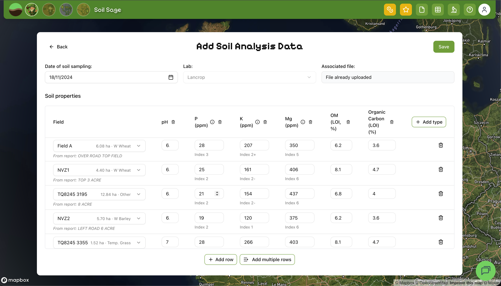
OUR PROGRESS
1,255,715
Hectares of land using Soil Benchmark
5,334
Soil Management Plans created
⚠️
Heads up
Soil Management Plans are no longer part of SFI —
so we're expanding the platform into
Nutrient Management and
Spray Recommendations.